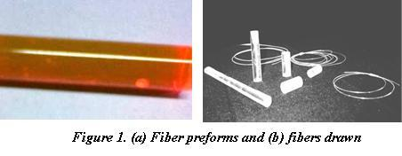
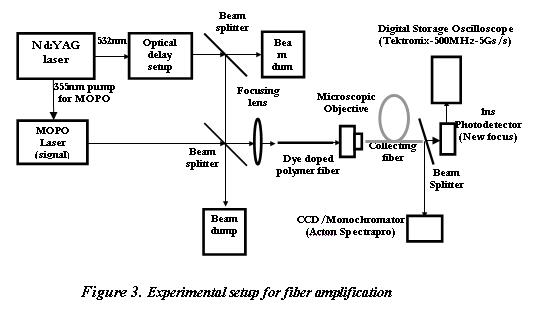
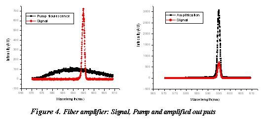
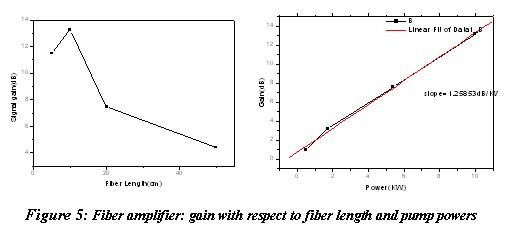
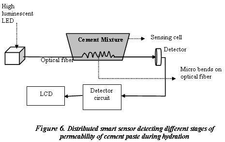
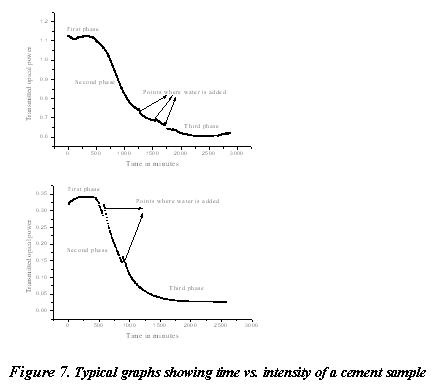

Polymer fibers doped with organic dyes have proved to be potential candidates for use in fiber lasers and amplifiers in the visible region.
We fabricated Rhodamine 6G doped polymer (polymethylmethacrylate) fiber typically of diameter 200 (+ 1%) microns [figure 1]. The preform for fabricating this fiber is made by polymerizing a mixture of monomer methylmethacrylate (MMA), benzoyl peroxide (0.01 mol l-1) (initiator), n-butyl mercaptan (0.03 mol/l) (chain transfer agent) and Rhodamine 6G dye (0.001 mol/l) in sealed tubes. After appropriate temperature treatment, the prepared perform is used to draw the optical fiber in a custom made indigenous fiber drawing tower which is shown in figure 2.

Fiber drawing tower comprises 1) preform feeder 2) furnace 3) Temperature controller 4) fiber pulling capstan and 5) The winding spool. The tower is fully automated enabling fine control of the fiber drawing parameters such as perform feed rate, drawing rate and diameter of the drawn fiber.

The fabricated dye doped optical fiber is pumped with a pulsed Nd:YAG laser beam at 532nm. Since the subsequent fluorescence emission is at 595nm, this wavelength (from wavelength tunable MOPO) is used as the signal for the fiber amplifier. The signal is fed into the fiber axially and the output is observed either using a CCD Monochromator or a 1 ns photo detector. The experimental setup of the fiber amplifier is shown in figure 3. The fiber amplification results obtained in dye doped polymer fiber is shown in the ensuing figures.
The fabricated dye doped optical fiber is pumped with a pulsed Nd:YAG laser beam at 532nm. Since the subsequent fluorescence emission is at 595nm, this wavelength (from wavelength tunable MOPO) is used as the signal for the fiber amplifier. The signal is fed into the fiber axially and the output is observed either using a CCD Monochromator or a 1 ns photo detector. The experimental setup of the fiber amplifier is shown in figure 3. The fiber amplification results obtained in dye doped polymer fiber is shown in the ensuing figures.



Figure 4 shows a maximum gain of 18 dB for a length of 10 cm which suggests that there is an optimum length to attain maximum amplification (at 10-3 molar dye concentration). This enhanced gain is an advantage of dye doped fiber in comparison with erbium doped fiber amplifier (EDFA) which needs several meters of length to attain optimum gain. Polymer optical fiber amplifier working in the present communication wavelengths can also be developed by using appropriate dyes or dopants. Studies in this direction are in progress.
We developed a fiber optic distributed smart sensor to study the different stages of permeability of cement paste during hydration. A finite length of an unsheathed optical fiber is laid inside the cement mix and the transmitted light output is monitored continuously. The variation of optical attenuation measured with respect to time provides us with the setting characteristics of cement mix. The basic principle underlying the sensor is that as the cement sets, it exerts a stress on the sensing fiber, which is laid within the cement paste. This stress induces strain on the optical fiber, acting as a series of aperiodic microbends on the surface of the fiber which affects the transmitted light through the fiber and can be viewed as stress induced modulation of light in the fiber. By monitoring the intensity variation with time, as shown in figure 7, we can accurately determine the cement setting rate. This can be used as an effective tool for quality testing of commercially available cements of different grades.
The experimental set-up [figure 6] essentially consists of a super luminescent LED source, a certain length of multimode plastic clad silica fiber (200/230µm) and a photo detector. The epoxy lens of the commercially available LED (λ=670 nm.) is removed and the end face is thoroughly polished, so as to get an efficient coupling to the fiber.
This fiber optic smart sensor, which is an inexpensive and simple sensor, can be used to monitor the setting characteristics of cement mix during civil construction activities.
We developed a fiber optic distributed smart sensor to study the different stages of permeability of cement paste during hydration. A finite length of an unsheathed optical fiber is laid inside the cement mix and the transmitted light output is monitored continuously. The variation of optical attenuation measured with respect to time provides us with the setting characteristics of cement mix. The basic principle underlying the sensor is that as the cement sets, it exerts a stress on the sensing fiber, which is laid within the cement paste. This stress induces strain on the optical fiber, acting as a series of aperiodic microbends on the surface of the fiber which affects the transmitted light through the fiber and can be viewed as stress induced modulation of light in the fiber. By monitoring the intensity variation with time, as shown in figure 7, we can accurately determine the cement setting rate. This can be used as an effective tool for quality testing of commercially available cements of different grades.
The experimental set-up [figure 6] essentially consists of a super luminescent LED source, a certain length of multimode plastic clad silica fiber (200/230µm) and a photo detector. The epoxy lens of the commercially available LED (λ=670 nm.) is removed and the end face is thoroughly polished, so as to get an efficient coupling to the fiber.
This fiber optic smart sensor, which is an inexpensive and simple sensor, can be used to monitor the setting characteristics of cement mix during civil construction activities.

